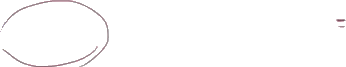
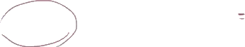

I thought I would do a few more examples of taking antiderivatives, just so we feel comfortable taking antiderivatives of all of the basic functions that we know how to take the derivatives of. And on top of that, I just want to make it clear that it doesn't always have to be functions of x. Here we have a function of t, and we're taking the antiderivative with respect to t. And so you would not write a dx here. That is not the notation. You'll see why when we focus on definite integrals.
 

objects 0 - 1
line badness[0][1] = 0
t penalty = -0.0
x penalty = -32.0
y penalty = -0.0
objects 2 - 3
line badness[2][3] = 0
t penalty = -0.0
x penalty = -5.0
y penalty = -0.0
objects 4 - 5
line badness[4][5] = 0
t penalty = -0.0
x penalty = -15.0
y penalty = -0.0
objects 6 - 7
line badness[6][7] = 0
t penalty = -0.0
x penalty = -381.0
y penalty = -0.0

objects 8 - 10
line badness[8][10] = 0
t penalty = -105.0
x penalty = -26.0
y penalty = -105.0
objects 11 - 13
line badness[11][13] = 0
t penalty = -0.0
x penalty = -10.0
y penalty = -0.0
objects 14 - 15
line badness[14][15] = 0
t penalty = -405.0
x penalty = -711.0
y penalty = -405.0
So what's the antiderivative of this business right over here? Well, it's going to be the same thing as the antiderivative of sine of t, or the indefinite integral of sine of t, plus the indefinite integral, or the antiderivative, of cosine of t. So let's think about what these antiderivatives are. And we already know a little bit about taking the derivatives of trig functions.
objects 16 - 17
line badness[16][17] = 0
t penalty = -45.0
x penalty = -24.0
y penalty = -45.0
objects 18 - 19
line badness[18][19] = 0
t penalty = -0.0
x penalty = -8.0
y penalty = -0.0
objects 20 - 21
line badness[20][21] = 0
t penalty = -0.0
x penalty = -5.0
y penalty = -0.0
objects 22 - 23
line badness[22][23] = 0
t penalty = -0.0
x penalty = -13.0
y penalty = -0.0
objects 24 - 25
line badness[24][25] = 0
t penalty = -30.0
x penalty = -26.0
y penalty = -30.0
objects 26 - 27
line badness[26][27] = 0
t penalty = -0.0
x penalty = -8.0
y penalty = -0.0
objects 28 - 29
line badness[28][29] = 0
t penalty = -0.0
x penalty = -269.0
y penalty = -0.0
We know that the derivative with respect to t of cosine of t is equal to negative sine of t. So if we want a sine of t here, we would just have to take the derivative of negative cosine t.

objects 30 - 32
line badness[30][32] = 0
t penalty = -95.0
x penalty = -98.0
y penalty = -95.0
If we take the derivative of negative cosine t, then we get positive sine of t. The derivative with respect to t of cosine t is negative sine of t. We have the negative out front. It becomes positive sine of t.

objects 33 - 34
line badness[33][34] = 0
t penalty = -680.0
x penalty = -644.0
y penalty = -680.0
So the antiderivative of sine of t is negative cosine of t.
objects 35 - 36
line badness[35][36] = 0
t penalty = -0.0
x penalty = -32.0
y penalty = -0.0
objects 37 - 39
line badness[37][39] = 0
t penalty = -880.0
x penalty = -885.0
y penalty = -880.0
So this is going to be equal to negative cosine of t.
objects 40 - 41
line badness[40][41] = 0
t penalty = -40.0
x penalty = -19.0
y penalty = -40.0
objects 42 - 44
line badness[42][44] = 0
t penalty = -0.0
x penalty = -8.0
y penalty = -0.0
objects 45 - 46
line badness[45][46] = 0
t penalty = -0.0
x penalty = -11.0
y penalty = -0.0
objects 47 - 48
line badness[47][48] = 0
t penalty = -0.0
x penalty = -26.0
y penalty = -0.0
objects 49 - 50
line badness[49][50] = 0
t penalty = -925.0
x penalty = -646.0
y penalty = -925.0
And then what's the antiderivative of cosine of t? Well, we already know that the derivative with respect to t of sine of t is equal to cosine of t.

objects 51 - 52
line badness[51][52] = 0
t penalty = -0.0
x penalty = -14.0
y penalty = -0.0
objects 53 - 54
line badness[53][54] = 0
t penalty = -0.0
x penalty = -243.0
y penalty = -0.0
So cosine of t's antiderivative is just sine of t-- so plus sine of t. And we're done. We've found the antiderivative.
objects 55 - 56
line badness[55][56] = 0
t penalty = -1385.0
x penalty = -799.0
y penalty = -1385.0
Now let's tackle this. Now we don't have a t. We're taking the indefinite integral with respect to-- actually, this is a mistake. This should be with respect to a. Let me clean this up. This should be a da. If we were taking this with respect to t, then we would treat all of these things as just constants. But I don't want to confuse you right now. Let me make it clear. This is going to be da. That's what we are integrating or taking the antiderivative with respect to.
objects 57 - 59
line badness[57][59] = 0
t penalty = -0.0
x penalty = -57.0
y penalty = -0.0
So what is this going to be equal to? Well once again, we can rewrite it as the sum of integrals.
objects 60 - 61
line badness[60][61] = 0
t penalty = -60.0
x penalty = -0.0
y penalty = -60.0
objects 62 - 63
line badness[62][63] = 0
t penalty = -0.0
x penalty = -444.0
y penalty = -0.0
objects 64 - 65
line badness[64][65] = 0
t penalty = -0.0
x penalty = -342.0
y penalty = -0.0

objects 66 - 67
line badness[66][67] = 0
t penalty = -0.0
x penalty = -28.0
y penalty = -0.0
objects 68 - 69
line badness[68][69] = 0
t penalty = -45.0
x penalty = -18.0
y penalty = -45.0
objects 70 - 72
line badness[70][72] = 0
t penalty = -560.0
x penalty = -729.0
y penalty = -560.0
This is the indefinite integral of e to the a da, so this one right over here-- a d I'll do it in green-- plus the indefinite integral, or the antiderivative, of 1/a da. Now, what is the antiderivative of e to the a? Well, we already know a little bit about exponentials.
objects 73 - 75
line badness[73][75] = 0
t penalty = -60.0
x penalty = -7.0
y penalty = -60.0
objects 76 - 77
line badness[76][77] = 0
t penalty = -0.0
x penalty = -8.0
y penalty = -0.0
objects 78 - 79
line badness[78][79] = 0
t penalty = -0.0
x penalty = -26.0
y penalty = -0.0
The derivative with respect to x of e to the x is equal to e to the x.
objects 80 - 81
line badness[80][81] = 0
t penalty = -490.0
x penalty = -226.0
y penalty = -490.0
That's one of the reasons why e in the exponential function in general is so amazing.
objects 82 - 83
line badness[82][83] = 0
t penalty = -15.0
x penalty = -32.0
y penalty = -15.0
objects 84 - 85
line badness[84][85] = 0
t penalty = -5.0
x penalty = -21.0
y penalty = -5.0
objects 86 - 88
line badness[86][88] = 0
t penalty = -0.0
x penalty = -16.0
y penalty = -0.0
objects 89 - 90
line badness[89][90] = 0
t penalty = -70.0
x penalty = -6.0
y penalty = -70.0
And if we just replaced a with x or x with a, you get the derivative with respect to a of e to the a is equal to e to the a. So the antiderivative here, the derivative of e to the a, the antiderivative is going to be e to the a.

objects 91 - 92
line badness[91][92] = 0
t penalty = -1415.0
x penalty = -272.0
y penalty = -1415.0
And maybe you can shift it by some type of a constant.
objects 93 - 94
line badness[93][94] = 0
t penalty = -55.0
x penalty = -85.0
y penalty = -55.0
Oh, and let me not forget, I have to put my constant right over here. I could have a constant factor. So let me-- always important. Remember the constant. So you have a constant factor right over here.
objects 95 - 96
line badness[95][96] = 0
t penalty = -25.0
x penalty = -102.0
y penalty = -25.0
Never forget that.
objects 97 - 98
line badness[97][98] = 0
t penalty = -1315.0
x penalty = -288.0
y penalty = -1315.0
I almost did.

objects 99 - 100
line badness[99][100] = 0
t penalty = -75.0
x penalty = -17.0
y penalty = -75.0
So once again, over here, what's the antiderivative of e to the a? It is e to the a. What's the antiderivative of 1/a? Well, we've seen that in the last video.
objects 101 - 102
line badness[101][102] = 0
t penalty = -0.0
x penalty = -12.0
y penalty = -0.0
objects 103 - 105
line badness[103][105] = 0
t penalty = -0.0
x penalty = -22.0
y penalty = -0.0
It is going to be the natural log of the absolute value of a.

objects 106 - 107
line badness[106][107] = 0
t penalty = -0.0
x penalty = -327.0
y penalty = -0.0
And then we want to have the most general antiderivative, so there could be a constant factor out here as well. And we are done.

objects 108 - 110
line badness[108][110] = 0
t penalty = 0
x penalty = 0
y penalty = 0